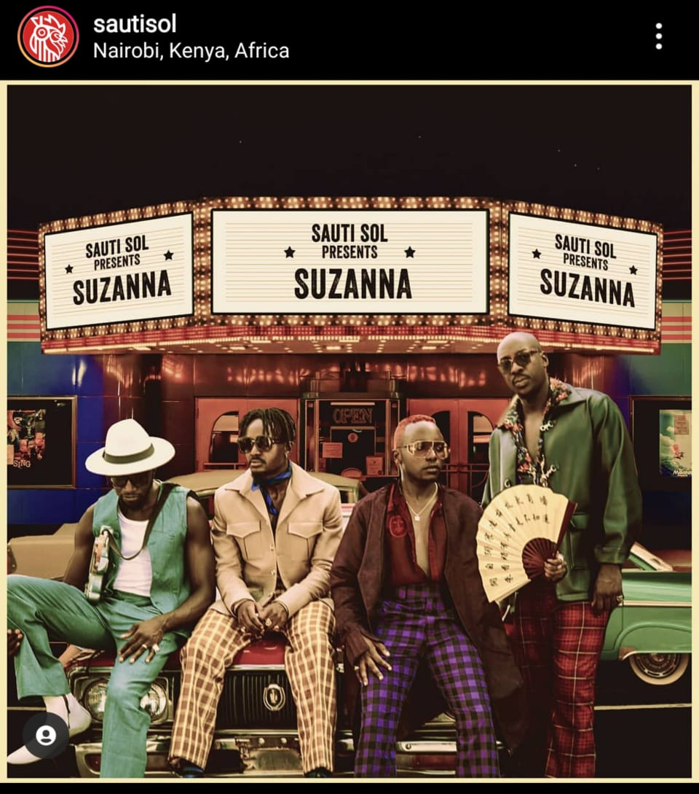

They are an Afro-pop band that started out as an acapella group dubbed Voices in Light. Bien-Aimé Baraza, Willis Chimano and Delvin Mudigi went to Upper Hill High School together.
Fun fact,they are close friends with mellow-voiced singer and radio presenter Antoneosol who was also Bien-Aimé’s desk mate.
They met Polycarp Otieno during their frequent visits to Alliance Française; where they would gather to showcase and practice their talent. Polycarp joined the group as a guitarist. They named themselves Sauti and later on incorporated ‘Sol’, the Spanish word for ‘sun’ to mean ‘Voices of the Sun’.